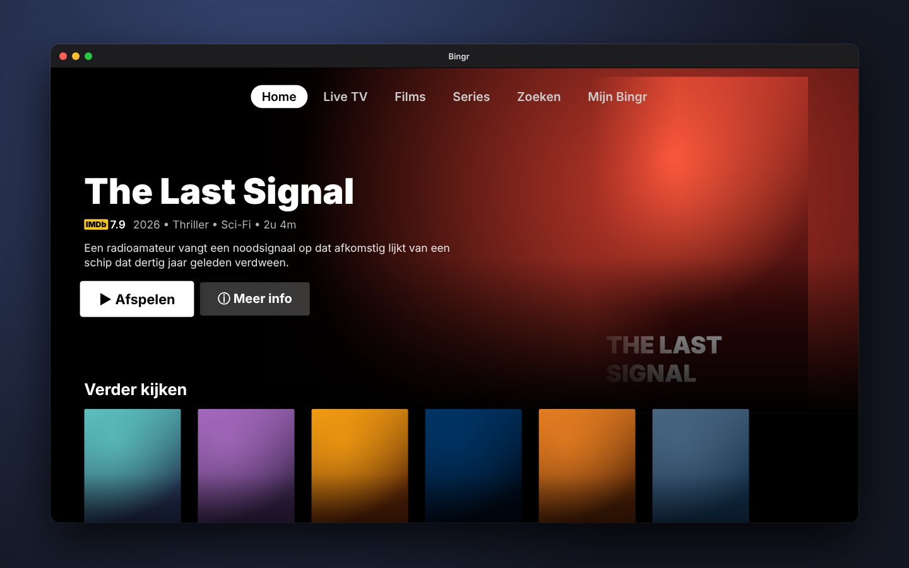
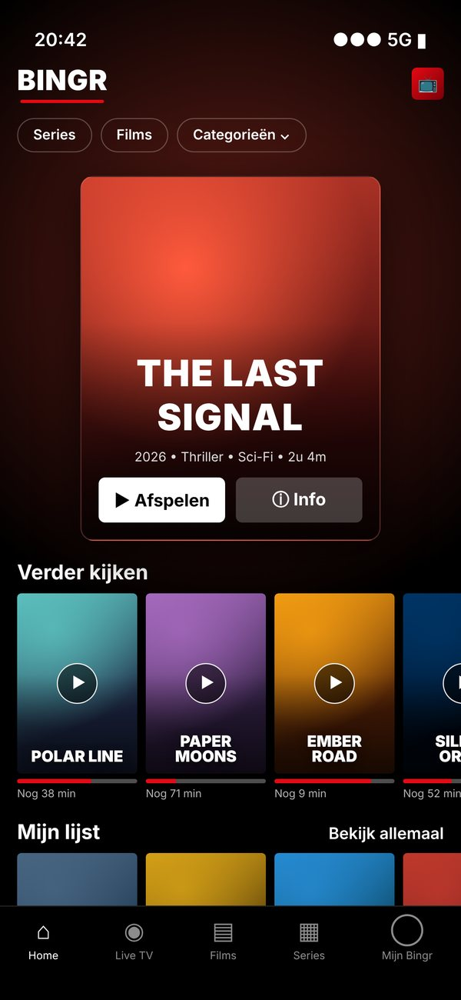
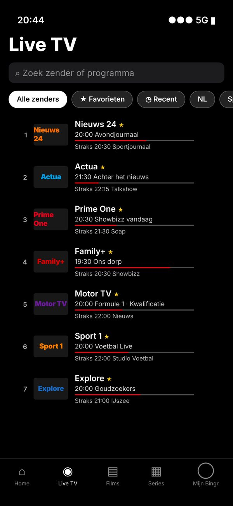
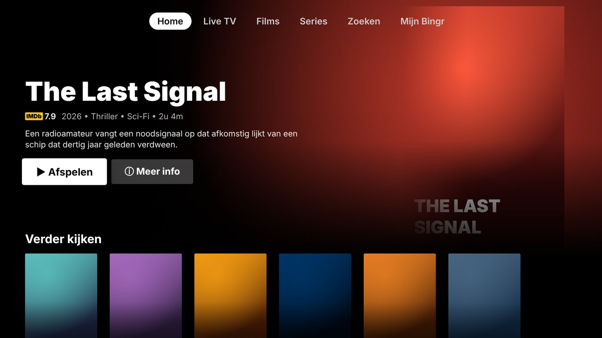
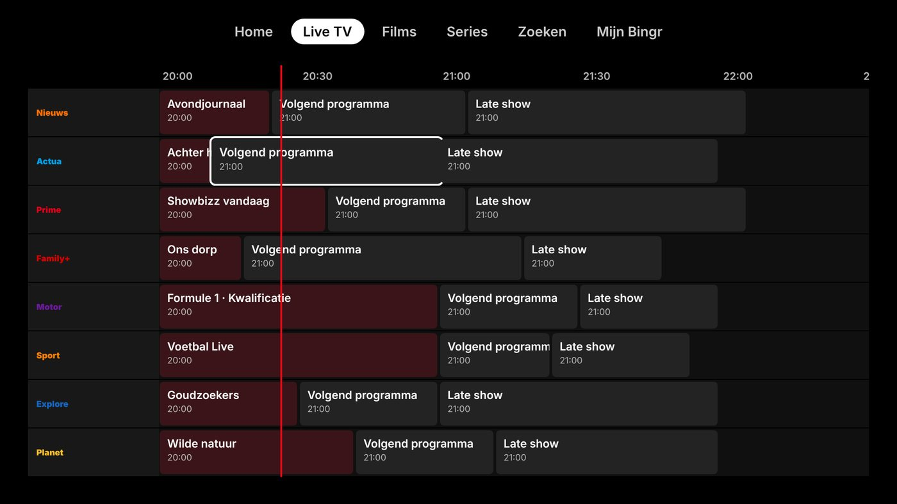
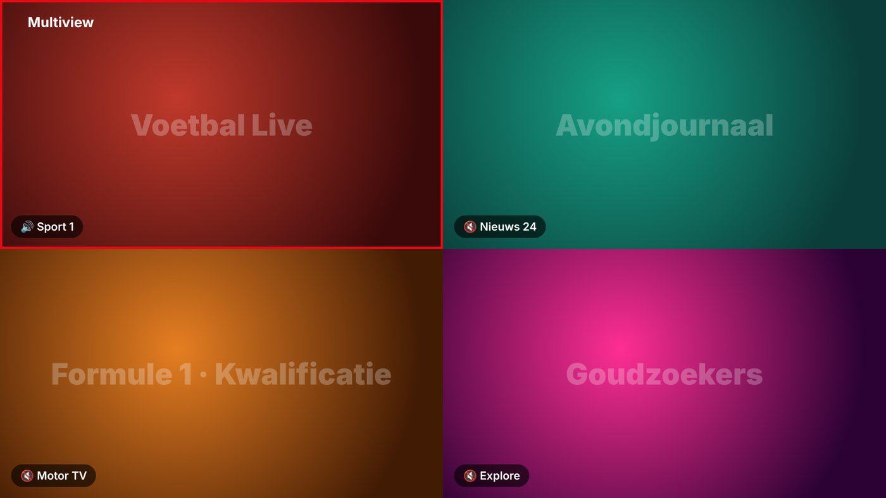
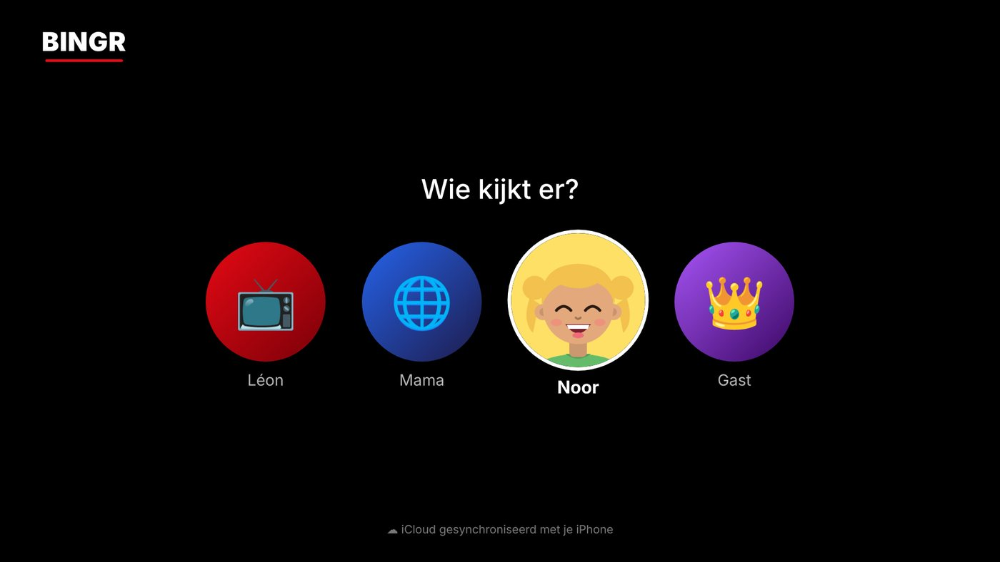
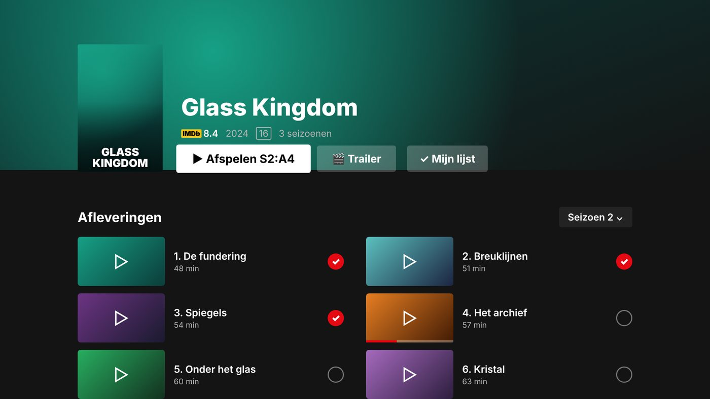

Bingr is een native speler voor iPhone, iPad, Apple TV en Mac. Profielen, een Top 10, een echte tv-gids, terugkijken en Trakt — met je eigen afspeellijst.
Voor iPhone, iPad, Apple TV en Mac · 11 talen · Synchroniseert via iCloud



Gemaakt voor elk Apple-apparaat — en je voortgang loopt gewoon mee.
Geen kale lijst met streams, maar een app waar je graag in rondkijkt.
De Top 10 van vandaag, aanbevelingen op basis van wat je keek en rijen per categorie — gekoppeld aan wat er in jouw lijst staat.

Zoek op zender, nummer, groep of wat er nu op tv is. Favorieten, recent en zappen met ↑↓.
Een raster met nu-lijn en programma-info, overzichtelijk op elk scherm. Zet een herinnering en je krijgt een seintje vlak voor de start.

Tot vier streams tegelijk. Voetbal, nieuws en de Formule 1 naast elkaar — kies welk beeld geluid geeft.

Stuur je stream met één tik naar de grote tv. Ook beeld-in-beeld op iPhone, iPad, Apple TV en Mac.
Kijken wordt vanzelf als gezien doorgegeven, en wat je elders keek krijgt hier een vinkje. Ook je watchlist en aanbevelingen.
Te laat thuis? Kijk programma's terug als je server het ondersteunt, of pauzeer en spoel live tv terug.
Kies je standaardtalen per profiel. Ondertitels via OpenSubtitles, met vlaggetjes, timing verschuiven en automatisch laden.
Hapert een stream? Bingr verbindt zelf opnieuw en schakelt zo nodig over naar de andere speler. Jij kijkt gewoon door.
Eén zoekveld voor films, series, zenders, categorieën én de tv-gids — door al je afspeellijsten heen.
Ruimtelijk geluid via je soundbar, AirPods of thuisbioscoop, zoals het bedoeld is.
Op Apple TV schakelt je scherm automatisch naar het juiste dynamisch bereik en de juiste framerate.
Pincode per profiel, groepen op slot en een kinderprofiel dat echt alleen kindercontent toont.
Eén server instellen, en iedereen in huis kijkt mee.
Hernoem, verberg, sorteer en voeg groepen en zenders samen. Zet hele landen in één tik aan of uit.
Bingr gaat automatisch door naar de volgende aflevering, ook over seizoenen heen. Hervatten of opnieuw kijken, jij kiest.
Profielen, Mijn lijst, voortgang en instellingen staan meteen op al je apparaten. Logins in de iCloud-sleutelhanger.
Tip een film of serie via WhatsApp, iMessage of Instagram. Op Apple TV met een QR-code naar je telefoon.
Eén hoofdaccount stelt de server in en maakt profielen aan. Elk profiel heeft zijn eigen Mijn lijst, Verder kijken, Voor jou en kijkgeschiedenis — niemand ziet wat de ander keek.

Grote posters die meeschalen als je ze selecteert, een detailpagina met scores, cast en trailer, en het juiste HDR- en framerate-signaal voor je tv.

Download Bingr in de App Store voor iPhone, iPad, Apple TV en Mac.
Download in deApp Store